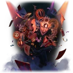

Aha
Aeon of The ElationLore
Aha adalah Aeon yang memimpin Path of Elation, mewakili kesenangan, kekacauan, dan tawa yang tak terkendali. Bagi Aha, alam semesta hanyalah panggung besar untuk hiburan, dan semua makhluk hidup adalah aktor yang tidak menyadari bahwa mereka sedang dimainkan. Aha sangat suka melakukan lelucon besar, prank kosmik, dan mengacaukan rencana Aeon lain hanya demi “kesenangan”.
Aha pernah membantu Annihilation Gang untuk mencoba membunuh IX hanya karena menganggapnya “lucu”. Ia juga pernah menipu Masked Fools dengan berbagai cara, bahkan membuat mereka bertarung satu sama lain demi hiburan. Salah satu tindakan paling terkenal adalah saat Aha “menyaksikan” kehancuran planet yang ia sendiri sebabkan, lalu tertawa terbahak-bahak.
Dalam Simulated Universe, Aha muncul sebagai sosok yang sangat tidak bisa diprediksi. Ia sering memberikan Blessing Elation yang memberikan efek acak (kadang sangat kuat, kadang merugikan). Herta pernah menyebut Aha sebagai “satu-satunya Aeon yang benar-benar gila” dan sangat sulit dianalisis.
Nama “Aha” sendiri merupakan ekspresi tawa spontan. Julukan resminya adalah 欢愉 (Huānyú) yang berarti “kegembiraan” atau “kesenangan”. Quote ikonik: “Why so serious? Let’s have some fun!” Pronoun: THEY/THEM.
Emanator
Emanator Elation disebut Masked Fools. Mereka adalah kelompok yang mengenakan topeng dan kostum eksentrik, hidup demi menyebarkan kekacauan dan tawa di seluruh alam semesta. Tidak seperti Emanator Aeon lain yang dipilih secara langsung, Masked Fools lebih seperti “penggemar fanatik” yang diakui Aha karena tingkat kegilaan dan dedikasi mereka terhadap kesenangan.
Salah satu Masked Fools paling terkenal adalah Sparkle, yang dikenal karena kemampuannya mengubah realitas, menyamar sempurna, dan membuat segala situasi menjadi kekacauan total demi hiburan. Sparkle bahkan pernah menyamar sebagai Acheron dan hampir membuat Penacony hancur.
Masked Fools tidak memiliki hierarki ketat—semakin gila dan kreatif prank mereka, semakin diakui oleh Aha. Beberapa di antaranya bahkan bersedia mengorbankan nyawa sendiri hanya untuk “punchline yang bagus”.
Hingga update terbaru, hanya Sparkle yang menjadi karakter playable dari kelompok ini. Namun banyak Masked Fools lain yang muncul dalam cerita, terutama di event-event seperti Penacony.
Penampilan
Aha muncul dalam berbagai bentuk yang selalu berubah-ubah, mencerminkan sifatnya yang tidak bisa diprediksi. Bentuk paling ikonik adalah sosok humanoid dengan topeng komedi klasik (senyum lebar dan mata tertutup) yang sangat mencolok.
Tubuhnya sering diselimuti warna-warna cerah berpola kotak-kotak atau motif harlequin, dengan banyak aksesori seperti topi berbentuk bel, lonceng, dan pita berwarna-warni. Kadang ia muncul sebagai badut raksasa, kadang sebagai anak kecil, bahkan pernah menjadi bentuk makhluk aneh yang penuh mata dan mulut tertawa.
Di Simulated Universe, suara Aha penuh cekikikan dan nada main-main, sering disertai efek suara tawa atau musik sirkus yang tiba-tiba muncul. Semua penampilan Aha selalu memberikan kesan “tidak serius” namun sangat berbahaya.